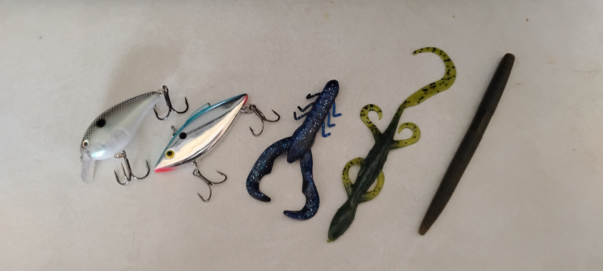

You might be asking yourself "What lures should I use"well I HAVE THE ANSWERS.If you are bass fishing you should use a swinbiat,a sankos,Diver,crankbait,and a lipless diver are the best lures you can use to cathc a bass.Trout fish all you need is some power bait to catch a trout.A allagaergar,well you need a huge carp and cut him in to peices and then put it on the hook.Catfish/bluegill you can use hotdogs,worms,and bread are the best bait for caitfish and bluegill

by Milknuggest from wikimedia